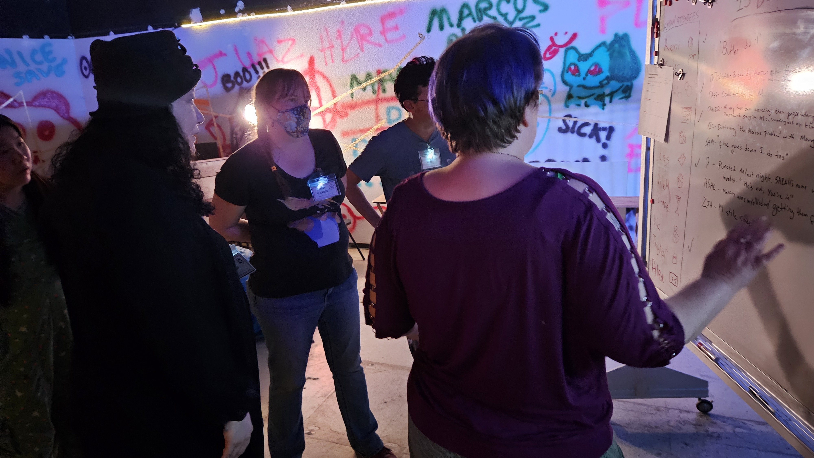
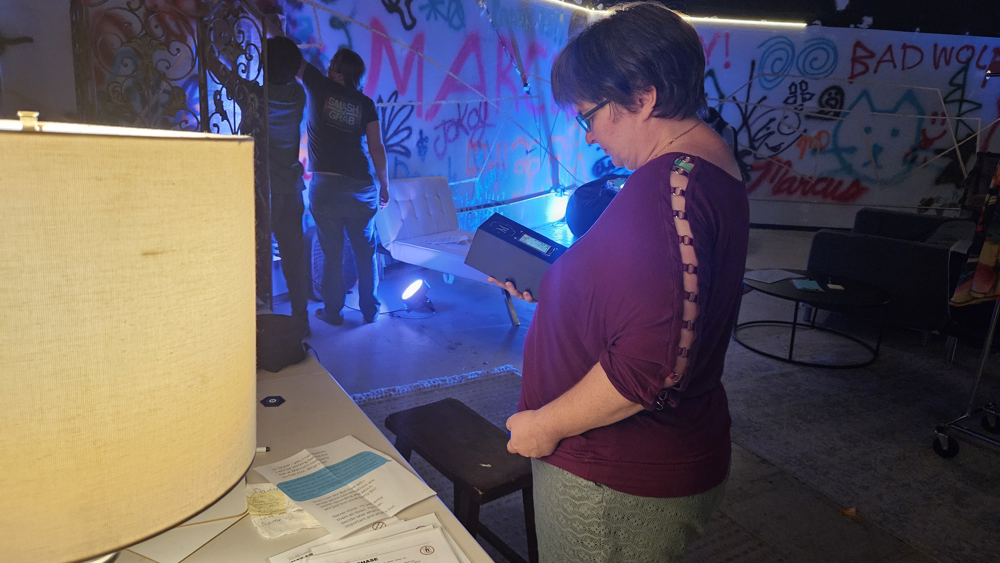
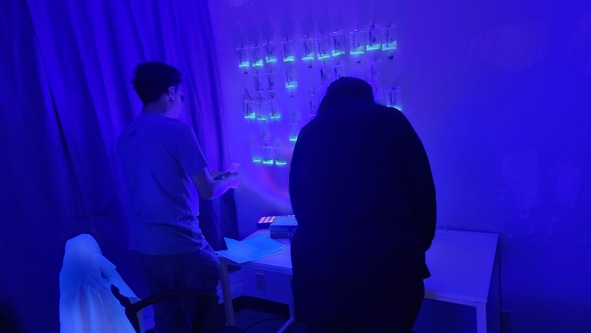
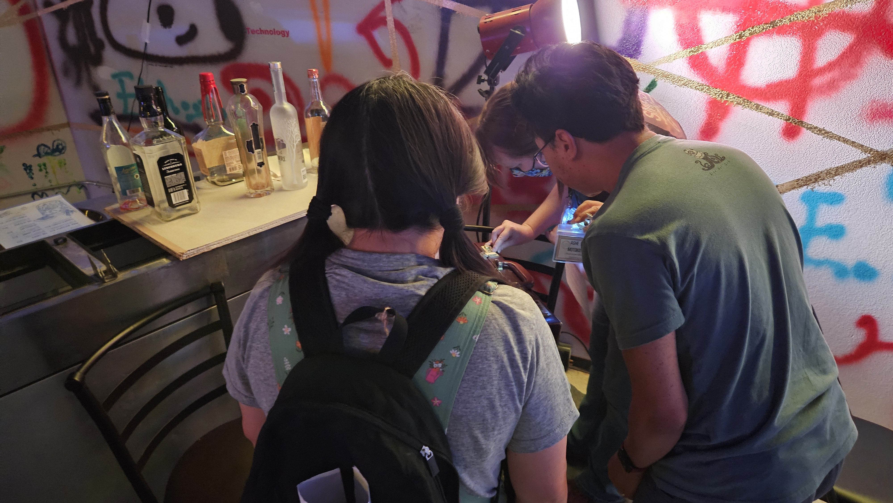
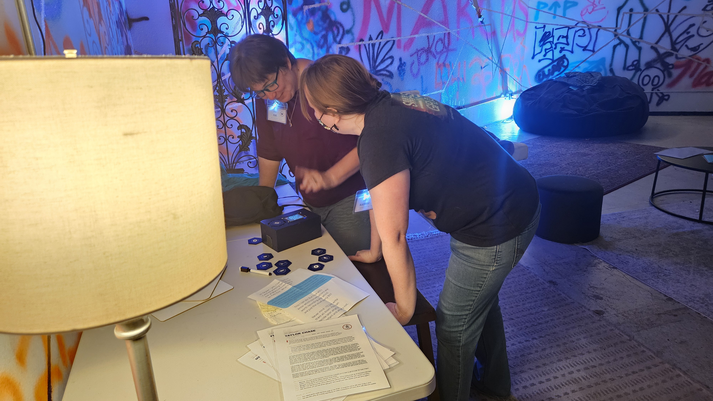
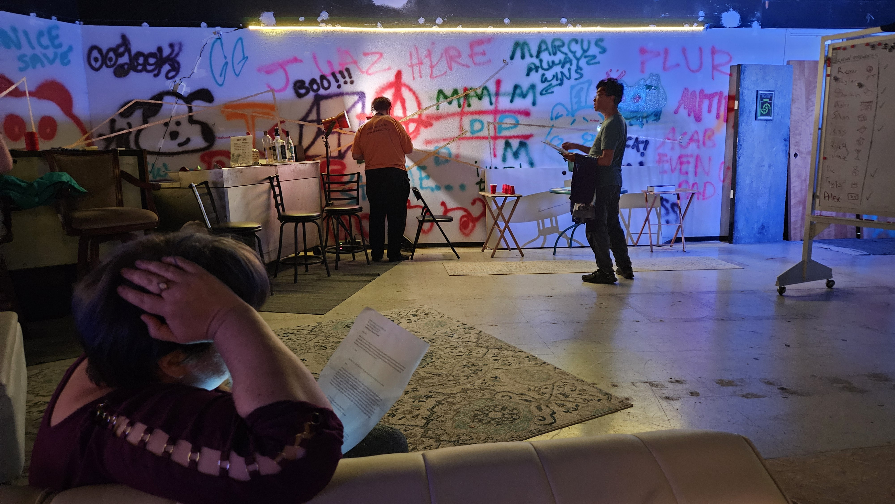
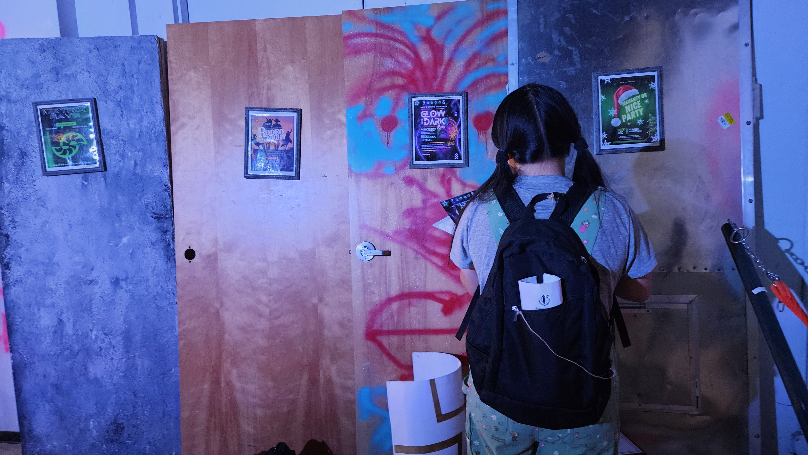

Who Killed Marcus Blackwood? Ask the People He Robbed
They named Skyler Iyer, who wasn't there to answer. The largest pile of hush money wore his widow's name.

Marcus Blackwood is dead. He flatlined in the back of his own warehouse a little before five this morning, while the people he had drugged a few hours earlier were still unconscious in the next rooms. He had not poisoned an enemy. He had dosed his own guests, the way he ran everything, and pulled the memories out of their heads before whatever stopped his heart caught up with him.
They did not come around until the morning was well along. When they did, they were the only witnesses to a death they had slept straight through, surrounded by a dead man's secrets, and they set about rebuilding the night the only way left to them. Out of the memories he had stolen from them.
By the time the first tips reached me, they had a name. Skyler Iyer. An outsider who was not in the room and is not answering their phone. They called it revenge, and not one of them argued that Marcus was innocent.
I was not there. I work these from the outside now, on the receiving end of a phone that did not stop this morning. Here is what came through.
THE STORY
The first thing that came through was about the code. Years back, Alex Reeves and Marcus built a company together, BizAI. Alex did the actual building, the software, the systems, the idea that a machine could watch a person and remember them. Marcus did the part Marcus was good at, which was getting his name in front of investors. When he sold BizAI for three hundred million dollars, Alex got a line item called a technical consultation fee.
Then he did it again, and bigger. He took the memory work Alex had built and stood up a new company on it by himself, NeurAI, sole owner, Alex nowhere on the paperwork. The cease and desist Alex's lawyers later sent says it in plain language: the founding concept was "originally proposed to M. Blackwood by A. Reeves in spring 2024." Alex was never part of NeurAI. That was the design. The company ran on Alex's work and kept Alex outside the door.
And he did not stop at Alex. The memories that came in over the next hour were the same move run on other people. Zia Bishara's storage algorithm, lifted whole. Cass Zhang's Synesthesia Engine, taken before the contract was even signed.
Read that again. Marcus did not steal carefully. He stole lazily, and left in a bug Zia had already fixed in her own version. That is the company a roomful of investors lined up to fund.

Here is where it stops being a story about money. Marcus did not only take what these people built. Last night he drugged them and took what they remembered. He had been leaning on a chemist to push the dose higher, chasing what he called the side effects he was looking for, and once the room was on its feet but not steady, he harvested it.
He called them zombies. These were his friends.

By the time I had read a dozen of these, the question had turned itself inside out. It was not hard to find someone with a reason to want Marcus gone. It was hard to find someone without one. Remi Whitman, who runs a rival firm, had watched the same investor who iced her out hand Marcus twenty million dollars for a worse product. That investor, Vic Kingsley, had been meeting quietly with Marcus's fixer about what the two of them called the Marcus problem. Ashe Motoko, a journalist, had already tried to tell this story once, and Marcus had him fired for it. And Alex, the one Marcus built the whole company on top of, had a lawyer and a grievance years in the making.
And then there was Skyler Iyer. Skyler had reason to resent Marcus too. Marcus had been fishing in CyberLife's proprietary research, Skyler's own company, asking questions too specific to be honest, and Skyler knew it. But Skyler was not only a victim here. They were the one leaning on Marcus to stop stalling and run the machine on human memory recordings. 'What's the worst that could happen,' they said, in a recording I have now played more times than I would like. And they had been paying Marcus's bartender, a hundred dollars a conversation, to log who else Marcus had recruited. The accused, it turns out, had been running their own investigation.
There was one more name the room kept circling back to. Marcus's wife.
FOLLOW THE MONEY
Here is the other thing that came out of that warehouse this morning, in the accounts that reached me. Money moved. It was not Marcus's money, and the people moving it were not cashing out his estate. They were being paid, by what looks like NeurAI's own board, to put certain memories back in the dark. The same trade Marcus built his life on, turned now on the people he stole from, except this time the company was the buyer. Around three million dollars of it, across the morning.
Most of it pooled in one place. By the end, a single account held just over $1.4 million, more than any other. The name on it was Sarah Blackwood. Marcus's wife.

Here is what I am told, and what makes that account worth staring at. Sarah did not open it. Someone else did, quietly, under her name, and stacked it high while she was occupied elsewhere. It only became clear at the very end what they had built. A frame, in plain sight, pointed at the most obvious suspect in any dead man's story. The wife. A frame like that does two things at once. It hands the room an easy answer, and it clears a path. Hold onto that.
The other accounts were not coy about it. A little over a million went to one that wore no real name at all, just "Pikachu." And the first sale of the morning ran through an account Jess Kane put her own name on and never hid. She said she had nothing to conceal. Maybe that is true. The point is she signed her work. Somebody else signed Sarah's.
THE PLAYERS
Two people in that room got the same letter from Marcus. Not a similar letter. The same one.
"I'm sorry. I love you. It's never going to happen again. She means nothing to me. Don't leave me."
Marcus, in the cards he sent both his wife and Jess
To his wife Sarah, who had already kicked him out and hired a divorce lawyer, and to Jess Kane, who is carrying his child, Marcus sent an identical apology, word for word. Sarah came to the party to confront him about something important. He would not take her calls. Jess came because she loved him, she says, and he had ghosted her.

Sometime this morning, the people who were there tell me, the two of them went through the evidence side by side and worked out about each other. What they did with that is the part I keep turning over. They did not turn on each other. According to those same accounts, they made a pact. 'We'll both get his money and do better.'
And then Jess did something else. She gathered the memories, all of them, the ones everyone was pulling out of the walls, and built them into the story. The official version. The one that ends with a name circled on a whiteboard. I am not going to pretend I don't find it interesting that the person who assembled the case against Skyler is also the person Marcus wronged most personally. I am not accusing Jess of anything. But I notice who is holding the pen.
Remi Whitman brought the proof that sank Marcus's reputation. Vic Kingsley, the investor the others kept going to for answers this morning, by every account that reached me, somehow kept every one of his own memories off the table. And Ashe Motoko, the reporter Marcus once had silenced, finally watched the story surface.
Then there is Alex. Marcus built NeurAI on Alex's work and made sure Alex never set foot in it. And this morning, I am told, a letter is being drafted that would hand Alex the chair Marcus sat in, once things blow over. The person Marcus robbed to build the company is about to be given the company. You could call that justice. But watch how the blame moved this morning while no one was looking at the chair. The room aimed it at Skyler, who was not there. The money aimed it at Sarah, in an account she never opened. Both are tidy. Both point away from the one outcome nobody in that room had to vote on. Someone is getting Marcus's company. I am not naming a killer. I am noticing which way the suspicion conveniently flowed.
WHAT'S MISSING
For all of it, most of last night is gone. Fourteen memories were sold into silence this morning, three million dollars of it. I can name the accounts and count the money. I cannot tell you a single thing about what is inside the memories that went dark, or whose hand built the pile in Sarah's name. That is what the money buys. Not a lie. A locked door.

Some of it cannot be recovered at all. The drug that pulled these memories out left holes where they used to be. In one recording, Jess tells a friend she went through the extraction herself and remembers none of it. And the one name that could answer for any of this is gone. There is a warrant out for Skyler. Word is they have left the country. Vic's memories never surfaced either. Some doors stay shut because no one alive can open them. Others, because someone paid.
CLOSING
So who killed Marcus Blackwood? The room said Skyler, and I am not going to overrule the people who were inside it. Maybe they are right. Maybe revenge is the whole story. But I have covered enough of these to know that the easiest name to circle is the one that cannot argue back.
What I am sure of is what Marcus built, and that it outlived him by breakfast. A machine that turns the inside of a person's head into product. He ran it on stolen work and drugged friends, and the morning after he died, the people he ran it on used the same machine on each other, selling memories back into the dark for money that looks like it came from his own board.
"Same pattern: brilliant people choosing money over meaning."
From Ezra Sullivan's extracted memory
He even tried to bury the reporting. He got a journalist named Ashe Motoko fired to kill a story about these exact experiments. Ashe was in that room this morning, and the story he was silenced for is the one that reached me. It runs now.

NeurAI is still raising thirty million dollars. The chair is still warm. Somebody wrote MARCUS BLACKWOOD IS DEAD on a whiteboard, and under it one word, revenge, and six people went home. Before they decide that is the ending, I would ask them to look once more at who left that room with a company, and who left holding the bag.